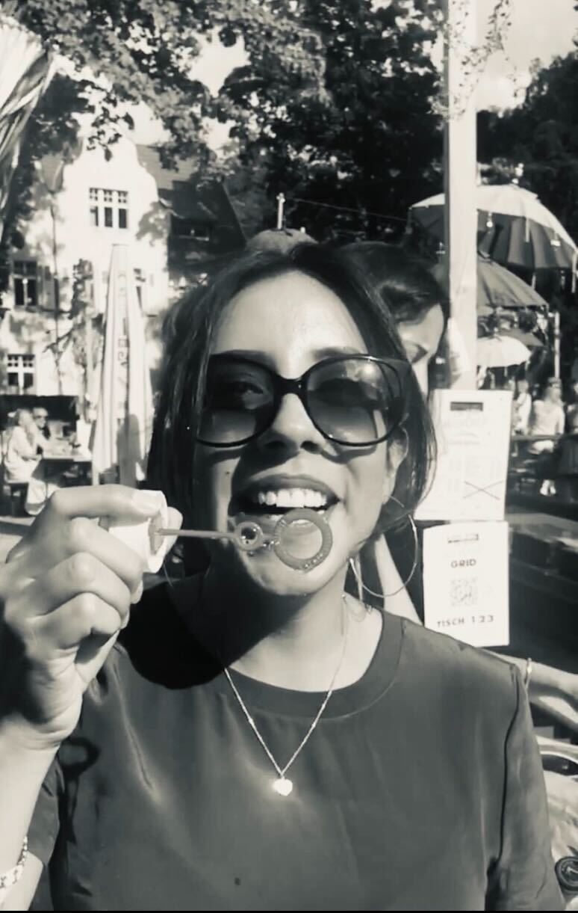

About Me
I'm a professional with +10 years of experience in Online Marketing, with strong focus on mobile Apps. Working
directly
with Product Owners and Software Developers made me more curious and eager to deep-dive into this field.
Therefore, I have embarked onto the journey of learning the technical aspects of web development.
I've successfully completed an extensive coding program by CareerFoundry as Full-Stack Web Developer.
I offer a comprehensive skillset of Web Development & App Marketing experience.